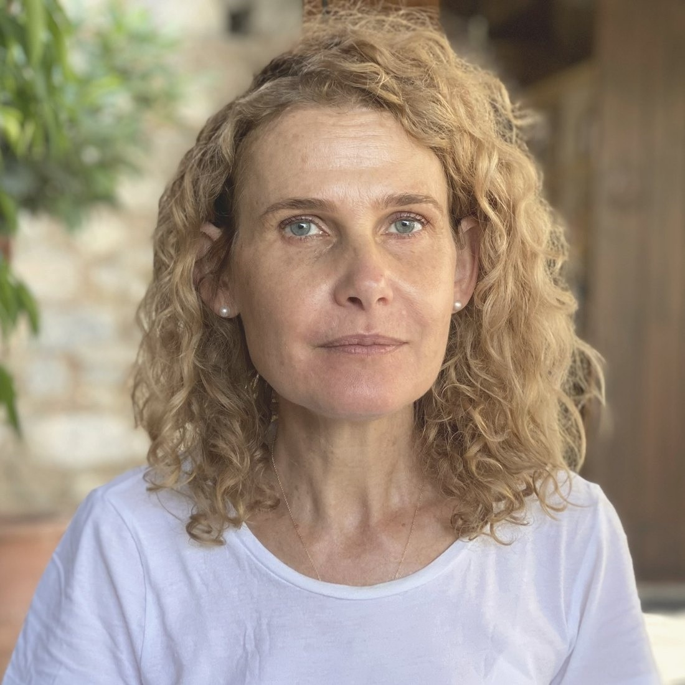
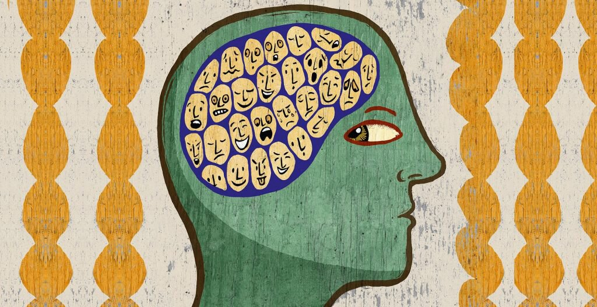

Jedem Teil von dir mit Mitgefühl begegnen
Ich begleite Menschen allein und als Paar mit Internal Family Systems (IFS) und systemischer Therapie: Wir lernen die inneren Anteile hinter deinen Gefühlen und Mustern kennen, sehen sie im Zusammenhang deines Familiensystems und heilen, was sie tragen.

Nichts an dir ist falsch. Jeder Anteil hat eine Geschichte.
Angst, eine gedrückte Stimmung, der Drang zu essen oder nicht zu essen, ein strenger innerer Kritiker, ein Streit mit dem Partner, der sich immer wiederholt: Hinter all dem steht meist ein Anteil in uns, der versucht zu helfen.
Oft haben diese Anteile ihre Rollen vor langer Zeit gelernt, in Situationen, in denen sie wirklich gebraucht wurden. In meiner Arbeit wenden wir uns ihnen mit Neugier zu, statt sie zu bekämpfen. Wenn sie sich verstanden fühlen, können sie alte Lasten und Ängste loslassen, und etwas Ruhigeres und Weiseres in dir kann wieder die Führung übernehmen. Ich arbeite warmherzig, in deinem Tempo und mit Respekt vor allem, was dir geholfen hat, durchzukommen.
„Es gibt keine schlechten Anteile.“
Die zentrale Überzeugung von Internal Family Systems, in den Worten ihres Begründers Richard Schwartz, und die Haltung, mit der ich den Menschen begegne, mit denen ich arbeite.
Was ist IFS?
IFS wurde von dem amerikanischen Psychologen Richard Schwartz entwickelt. Es geht von einer Erfahrung aus, die wir alle kennen: „Ein Teil von mir will das, ein anderer etwas ganz anderes.“
Unsere Psyche ist keine einzelne Stimme, sondern ein System innerer Anteile, jeder mit eigenen Gefühlen, Überzeugungen und Absichten. IFS bietet einen klaren und liebevollen Weg, diese innere Familie kennenzulernen, und wird heute weltweit in Psychotherapie, Paartherapie und Coaching eingesetzt.

Protektoren
Anteile, die versuchen, uns zu schützen: der Planer, der Kritiker, der Harmoniebedürftige, aber auch Anteile, die Schmerz mit Essen, Arbeit oder Rückzug betäuben. Sie arbeiten hart und sind oft erschöpft.
Exile
Jüngere, verletzliche Anteile, die noch alten Schmerz, Angst, Scham oder Einsamkeit tragen. Unsere Protektoren halten sie außer Sicht, deshalb kehren dieselben Reaktionen immer wieder.
Selbst
Der unversehrte Kern in jedem von uns: ruhig, neugierig, mitfühlend, klar und mutig. Aus dem Selbst heraus können wir unseren Anteilen zuhören, und sie können heilen und Rollen übernehmen, die uns heute dienen.
IFS und systemische Therapie in Einzelsitzungen
Du kannst mit einer konkreten Schwierigkeit kommen oder mit dem Gefühl, dass sich in deinem Leben etwas verändern möchte.
In unseren Sitzungen arbeiten wir mit dem, was heute in dir lebendig ist. Wir spüren, wo du es im Körper wahrnimmst, lernen die beteiligten Anteile kennen und gehen, wenn du bereit bist, zu den Stellen, die Heilung brauchen. Ich arbeite außerdem viel mit Familienaufstellungen und nutze Körperarbeit und NLP, wo sie hilfreich sind.
- Ängste und Phobien
- Depression und gedrückte Stimmung
- Essstörungen
- Scham und Schuld
- Trauma und Missbrauch
- Erfüllte Beziehungen
- Mutterschaft
- Lebensfragen und Übergänge
- Coaching und persönliche Entwicklung
- Familiendynamiken
- Online-Sitzungen
Die Anteile rund ums Essen verstehen
Hungern, Essanfälle oder Erbrechen sind oft das Werk von Protektoren, die mit aller Kraft versuchen, überwältigende Gefühle in Schach zu halten. Statt sie zu bekämpfen, lernen wir sie und den Schmerz, den sie hüten, kennen, sodass sie ihre Aufgabe nicht mehr über das Essen und den Körper erfüllen müssen. Für diese Anwendung von IFS habe ich mich gezielt weitergebildet.
Alte Lasten ablegen
Scham sagt „Ich bin falsch“, Schuld sagt „Ich habe etwas falsch gemacht“, und beide können still ein ganzes Leben prägen. In IFS begegnen wir den jungen Anteilen, die diese Überzeugungen übernommen haben, oft für jemand anderen, und helfen ihnen, abzulegen, was nie ihres war. Zugleich können sich die inneren Kritiker entspannen, die die Scham aufrechterhalten.
Das ganze Familiensystem sehen
Familienaufstellungen sind ein zentraler Teil meiner Arbeit. Viele der Gefühle und Muster, die wir tragen, haben nicht bei uns begonnen. Sie gehören zu einem größeren Familiensystem, mit seinen Loyalitäten, Verlusten und unausgesprochenen Geschichten, die manchmal über mehrere Generationen zurückreichen.
In einer Aufstellung machen wir dieses System im Raum sichtbar: in Einzelsitzungen mit Figuren oder Bodenankern, in Gruppen mit Stellvertretern. Verborgene Dynamiken kommen ans Licht, und was ausgeschlossen war, kann anerkannt werden und seinen Platz bekommen. Zusammen mit IFS zeigt sich so oft, welche Lasten ein Anteil aus der Familie übernommen hat, und er kann sie zurückgeben.
- Wiederkehrende Muster über Generationen
- Verlust, Trennung und schwere Familiengeschichten
- Dein Platz in der Familie und in deiner Partnerschaft
- Lasten, die für Eltern oder Vorfahren getragen werden
Vom alten Tanz zu echter Begegnung
Viele Paare kennen ihren schmerzhaften Kreislauf auswendig: Einer drängt, der andere zieht sich zurück; einer kritisiert, der andere verteidigt sich. Hier treffen Protektoren auf Protektoren.
Ich arbeite mit Intimacy from the Inside Out (IFIO), der auf IFS beruhenden Paartherapie, die Toni Herbine-Blank entwickelt hat. Gemeinsam verlangsamen wir den Kreislauf. Beide lernen, für ihre Anteile zu sprechen statt aus ihnen heraus, und zu hören, was die Protektoren des anderen hüten. Wo Vorwürfe waren, werden Verständnis und Nähe wieder möglich.
Eine Auszeit für tiefere Arbeit
Manches bewegt sich leichter in ein paar Tagen fern vom Alltag. Retreats für Gruppen biete ich auf Anfrage an, in unserem Chalet in Schliersee am Fuß der bayerischen Alpen oder an einem anderen Ort. Private Paar-Retreats biete ich gemeinsam mit meinem Mann Jens Riese im Chalet an.
Retreats für Gruppen
Auf Anfrage leite ich Retreats für innere Arbeit für kleine Gruppen, in unserem Chalet in Schliersee oder an einem Ort deiner Wahl. Das Programm gestalten wir gemeinsam, mit IFS, Familienaufstellungen, Körperarbeit und Natur: erfahrungsorientierte Sitzungen, Zeit draußen und Zeit zum Ausruhen. Im Chalet gehören Wanderungen in den Bergen, gesundes vegetarisches Essen und die Sauna dazu.
Das Chalet ansehenPrivate Paar-Retreats
Ein paar Tage nur für euch beide, zu Terminen, die euch passen: zwei IFS-basierte Paarsitzungen am Tag mit Jens und mir, und dazwischen das Chalet mit Spa und Garten, um anzukommen und wieder zueinanderzufinden.
Zum Paar-RetreatEin lebenslanges Interesse an Körper, Seele und den Menschen, die wir lieben
Ich habe vier Jahre Medizin und Psychologie studiert und mich dann entschieden, meine Kraft unserer Familie und der Erziehung unserer drei Söhne zu widmen. Diese Jahre haben mich so viel über Menschen gelehrt wie jeder Hörsaal: über Bindung, über Krisen, darüber, was Kinder und Paare brauchen, und wie viel Liebe und Geduld ein Familiensystem in sich trägt.
In den folgenden Jahren habe ich mich in vielen Ansätzen für Heilung und Wachstum ausgebildet. Ich wurde klassische Homöopathin, Somatic Coach und NLP-Practitioner und habe mein Zuhause in systemischen Aufstellungen und IFS gefunden. Der Respekt von IFS vor jedem Teil eines Menschen entspricht dem, was ich immer gespürt habe: dass unter unseren Kämpfen etwas Ganzes liegt, das wiedergefunden werden kann. Heute arbeite ich als Therapeutin und Coach in Einzel- und Paartherapie und bin staatlich zugelassene Heilpraktikerin.
Ich lebe mit meinem Mann Jens in Schliersee, am Fuß der Alpen.
- Heilpraktikerin (staatlich zugelassen)
- IFS-Therapeutin (Internal Family Systems)
- IFIO-Paartherapie (Intimacy from the Inside Out)
- IFS bei Essstörungen, Scham und Schuld
- Familien- und systemische Aufstellungen
- Somatic Coaching, NLP
- Vier Jahre Studium der Medizin und Psychologie
- Klassische Homöopathin
- Oxytocin Practitioner
Wie wir beginnen können
Wir beginnen mit einem kurzen Gespräch, telefonisch oder per Video, um zu sehen, ob meine Arbeitsweise zu dir passt. Danach vereinbaren wir einen Rhythmus, der zu deiner Situation passt.
In einer akuten Krise warte bitte nicht auf einen Termin. Ruf den Notruf 112 an oder die Telefonseelsorge, kostenlos und rund um die Uhr, unter 0800 111 0 111 oder 0800 111 0 222.
Schreib mir, in deinen eigenen Worten
Erzähl mir kurz, was dich zu mir führt, ob du an Einzelsitzungen, Paartherapie oder ein Retreat denken. Ich lese und beantworte jede Nachricht selbst.